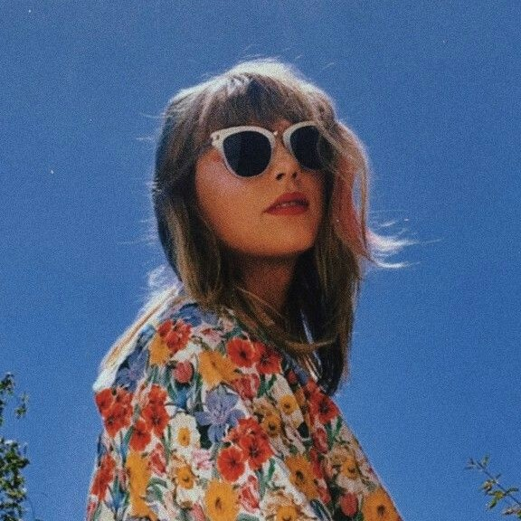

O nosso grupo é formado por 4 integrantes, somos nós: Angela, Bianca, Djovana e Júlia. Para esse ano, desejamos estudar até desmaiarmos, ir no show da taylor swift, rolezar por curitiba juntas e desenvolver nossas habilidades em programação.

djovana
15 anos
gosta de animais
gosta de cores vibrantes
positiva
extrovertida
gosta de musica
artista favorito: hayd
 bianca
16 anos
gosta de ler e de café
serena e original
artista favorito: taylor swift
bianca
16 anos
gosta de ler e de café
serena e original
artista favorito: taylor swift
 angela
16 anos
gosta de gatos e café
calma, indecisa e amante de cinema
jogo vôlei
gosto de ler
angela
16 anos
gosta de gatos e café
calma, indecisa e amante de cinema
jogo vôlei
gosto de ler
 julia
15 anos
gosto de livros e chá gelado sabor limão
inteligente, futura médica (hehe), leal e afetiva
mãe de 16 plantas lindas
toco pianinho e violino
julia
15 anos
gosto de livros e chá gelado sabor limão
inteligente, futura médica (hehe), leal e afetiva
mãe de 16 plantas lindas
toco pianinho e violino